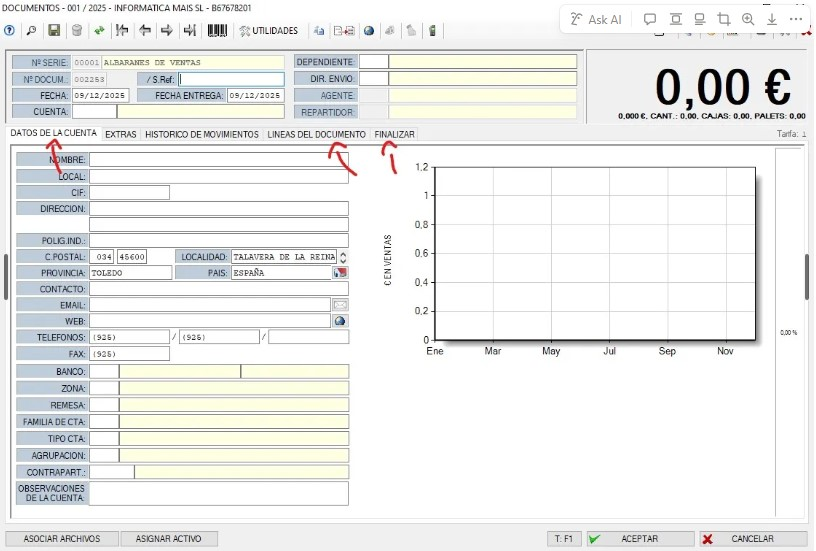
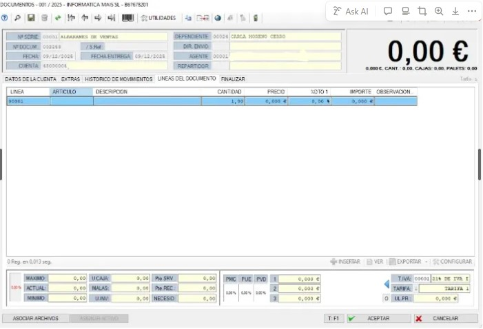

🛒 Botón de Documentos (El carrito)
En este apartado podremos crear documentos, como compras y ventas de artículos.
📑 Series disponibles
Por defecto, el MAIS incluye varias series de documentos. Las más utilizadas son:
- 📦 Albaranes de Ventas
- 📥 Albaranes de Compras
- 🧾 Facturas Simplificadas
👉 Si en la casilla de Serie pulsamos F2, podremos ver todas las series disponibles.
📤 Cómo hacer un Albarán de Venta
1️⃣ Seleccionar la serie
En Nº de serie, elegimos Albarán de Ventas. El Nº de documento se asignará automáticamente con el siguiente número libre de forma descendente. Rellenaremos los datos necesarios:
🧾 Datos de la cuenta
Es necesario completar los datos del cliente. La forma más rápida es pulsar F2 en el campo Cuenta, esto rellena automáticamente todos los datos necesarios.
📋 Líneas del documento

Para añadir artículos:
- Hacemos doble clic en la casilla del artículo
- Pulsamos F2 para ver todo el listado
- Elegimos el artículo
- Rellenamos los datos (cantidad, precio, descuento, etc.)
En la parte inferior derecha aparecerá también el tipo de IVA aplicable. ➡️ Para finalizar una línea, pulsamos Intro hasta que la casilla quede en blanco y pase a la siguiente.
✅ Finalizar el documento

- 💳 Forma de pago: seleccionamos una forma de pago.
- 💵 Importe recibido: en Efectivo o Tarjeta, introducimos lo que entrega el cliente. Ejemplo: si nos da 550 €, el sistema calculará el cambio automáticamente.
📎 Asociar archivos
También podemos adjuntar archivos al documento, como:
- Albaranes recibidos
- Facturas
- PDF adjuntos
- Imágenes o justificantes
🔁 Otros tipos de documentos
El funcionamiento es similar en todas las series. Por ejemplo, si hacemos un Albarán de Compra, podremos:
- Poner en Referencia el Nº del albarán del proveedor
- Adjuntar el archivo que nos proporcionaron
- Completar las líneas igual que en las ventas
🎉 ¡Venta realizada!
Una vez completado el proceso, la venta quedará registrada.